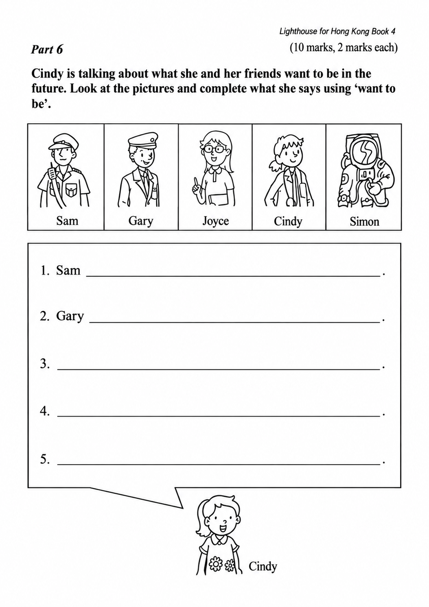
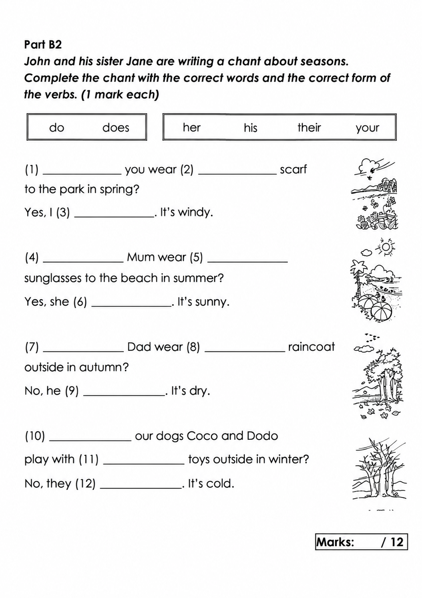
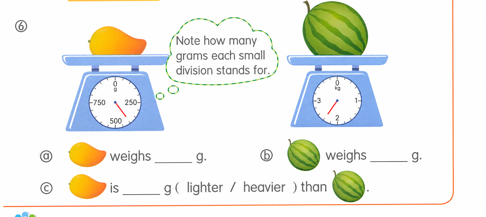

已掌握
| # | 中文意思 | 例句/提示 | 英文默写 | 已掌握 |
|---|---|---|---|---|
| noun 名词 | ||||
| 1 | 图书馆 | I read books in the . | ||
| 2 | 游戏房 | The children are in the . | ||
| 3 | 尾巴 | The dog wags its . | ||
| 4 | 清洁工人 | The works every day. | ||
| 5 | 周一 | I have an English lesson on . | ||
| 6 | 周四 | We have art on . | ||
| 7 | 曲奇饼 | Mum baked some . | ||
| 8 | 地址 | Please write your on the envelope. | ||
| verb 动词 | ||||
| 9 | 吃饭 | We together every evening. | ||
| 10 | 采摘；挑选 | We apples from the tree. | ||
| 11 | 发送 | I will you a postcard. | ||
| 12 | 打扫 | Please the floor. | ||
| 13 | 协助帮助 | I my teacher by handing out books. | ||
| preposition 介词 | ||||
| 14 | 在……之下 | The cat is the table. | ||
| phrase 短语 | ||||
| 15 | 数学计算 | We in math class. | ||
| adjective 形容词 | ||||
| 16 | 安静的 | Please be . | ||
| 17 | 不爱干净的 | My brother is and leaves his clothes on the floor. | ||
| adjective/adverb 形容词/副词 | ||||
| 18 | 早的；早地 | I get up . | ||
| verb phrase 动词短语 | ||||
| 19 | 去博物馆 | We with our teacher. | ||
| adverb 副词 | ||||
| 20 | 通常 | I have breakfast at seven. | ||
| # | 单词/词组 | 中文意思 | 例句/说明 | 已掌握 |
|---|---|---|---|---|
| adjective 形容词 | ||||
| 1 | excited | I was very excited on the first night. | ||
| 2 | gentle | Gopal is gentle and polite. | ||
| 3 | starving | They are starving after playing football. | ||
| noun 名词 | ||||
| 4 | bunny | The bunny eats a carrot. | ||
| 5 | seed | The bird pecks a seed. | ||
| 6 | structure | We are learning about sentence structure. | ||
| 7 | campsite | We put up our tent at the campsite. | ||
| 8 | cycling | I like cycling at weekends. | ||
| 9 | lettuce | Is there any lettuce in the fridge? | ||
| 10 | He is writing an email to his mum and dad. | |||
| 11 | fridge | Can you look in the fridge, please? | ||
| 12 | pudding | We ate Christmas pudding after dinner. | ||
| 13 | kitten | Milo is playing with a little kitten. | ||
| noun phrase 名词短语 | ||||
| 14 | role model | She is a role model for younger students. | ||
| 15 | a slice of pizza | May I have a slice of pizza, please? | ||
| 16 | General Studies | Some pupils like General Studies. | ||
| 17 | Visual Arts | Sarah is good at Visual Arts. | ||
| 18 | lucky draw | I won a small prize in the lucky draw. | ||
| verb 动词 | ||||
| 19 | chase | The dog may chase the ball. | ||
| 20 | walk | I walk my dog along the river. | ||
| 21 | feed | How often do you feed Kitty? | ||
| phrase 短语 | ||||
| 22 | Hong Kong Island | My uncle lives on Hong Kong Island. | ||
| verb phrase 动词短语 | ||||
| 23 | go camping | I want to go camping. | ||
| 24 | watching cartoons | She likes watching cartoons. | ||
| 25 | practise the piano | I practise the piano every afternoon. | ||
| 26 | pick up | We go to the beach and pick up the rubbish. | ||
| 27 | get a pet | Think carefully before you get a pet. | ||
| adverb 副词 | ||||
| 28 | always | We always turn off the lights when we leave a room. | ||
| adjective/noun 形容词/名词 | ||||
| 29 | leftover | We ate the leftover rice. Put the leftovers in the fridge. | ||
| adverbial phrase 副词短语 | ||||
| 30 | per day | Our dog goes for two walks per day. | ||
| # | 中文意思 | 例句/提示 | 英文默写 | 已掌握 |
|---|---|---|---|---|
| time/date 时间日期 | ||||
| 1 | 星期二 | is a weekday. | ||
| 2 | 星期三 | is a weekday. | ||
| 3 | 星期五 | is a weekday. | ||
| time unit 时间单位 | ||||
| 4 | 分 | A has 60 seconds. | ||
| numbers 数字 | ||||
| 5 | 8 | is 8. | ||
| 6 | 9 | is 9. | ||
| 7 | 12 | is 12. | ||
| 8 | 15 | is 15. | ||
| 9 | 70 | is 70. | ||
| 10 | 90 | is 90. | ||
| 11 | 百 | One is 100. | ||
| solid shape 立体图形 | ||||
| 12 | 五棱柱 | A has pentagonal faces. | ||
| 13 | 四棱锥 | A has one quadrilateral base and four triangular side faces. | ||
| 14 | 底 | The is at the bottom. | ||
| geometry 几何 | ||||
| 15 | 钝角 | An is greater than 90 degrees and less than 180 degrees. | ||
| # | 单词/词组 | 中文意思 | 例句/说明 | 已掌握 |
|---|---|---|---|---|
| operations 运算 | ||||
| 1 | subtraction | Subtraction means taking away. | ||
| 2 | altogether | How many are there altogether? | ||
| 3 | be left | How many apples will be left? | ||
| geometry 几何 | ||||
| 4 | parallel | Parallel lines never meet. | ||
| 5 | adjacent side | These are adjacent sides. | ||
| 6 | identical | These two triangles are identical in shape and size. | ||
| 7 | dotted line | Draw a dotted line between the two points. | ||
| directions 方向 | ||||
| 8 | direction | Direction tells us where to go. | ||
| question word 题目词 | ||||
| 9 | calculate | Calculate the answer. | ||
| answer 答案 | ||||
| 10 | answer | Write the answer in the box. | ||
| place value 位值 | ||||
| 11 | units | The digit is in the units place. | ||
| comparison 比较 | ||||
| 12 | less | 8 is less than 10. | ||
| 13 | least | Which number is the least? | ||
| time/date 时间日期 | ||||
| 14 | small division | The minute hand moves one small division in one minute. | ||
| 15 | second hand | The second hand goes around the clock once in one minute. | ||
| 16 | midnight | Midnight is twelve o'clock at night. | ||
| position 位置 | ||||
| 17 | below | The box is below the table. | ||
| operations calculation 运算 | ||||
| 18 | mixed operations | Mixed operations use more than one operation. | ||
| 19 | dividend | The dividend is divided by the divisor. | ||
| 20 | horizontal form | Write it in horizontal form. | ||
| 21 | column form | Write it in column form. | ||
| teacher math vocabulary 老师数学词汇 | ||||
| 22 | stop | Stop counting when you reach twenty. | ||
| currency money 货币 | ||||
| 23 | cent | One cent is a small amount of money. | ||
| 24 | exchange | We exchange money at the counter. | ||
| 25 | note | This is a five-dollar note. | ||
| measurement 测量 | ||||
| 26 | fill | Fill the jug with water. | ||
| 27 | kilogram | One kilogram is 1,000 grams. | ||
| directions tool 方向工具 | ||||
| 28 | compass | A compass shows directions. | ||
| 句型结构 | ||||
| 29 | ... is to the north of ... | The playground is to the north of the hall. | ||
| plane shape 平面图形 | ||||
| 30 | trapezium | A trapezium has exactly one pair of parallel sides. | ||



